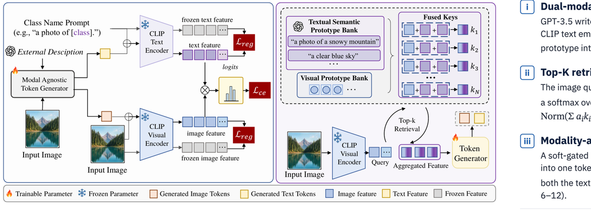

Sustaining Cross-Modal Dependency for Generalizable Vision-Language Model Tuning
Findings of EMNLP 2026
Retrieval-Augmented Dynamic Adaptation (RADA) preserves cross-modal semantic dependency during VLM tuning by combining a dual-modality memory bank with modality-agnostic token generation.